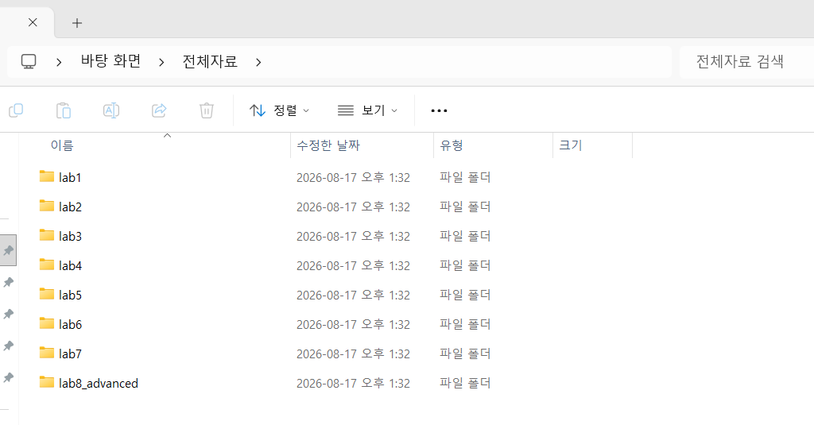
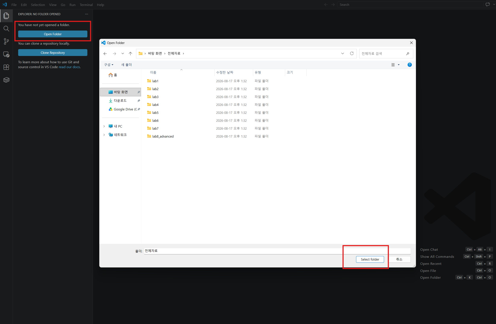
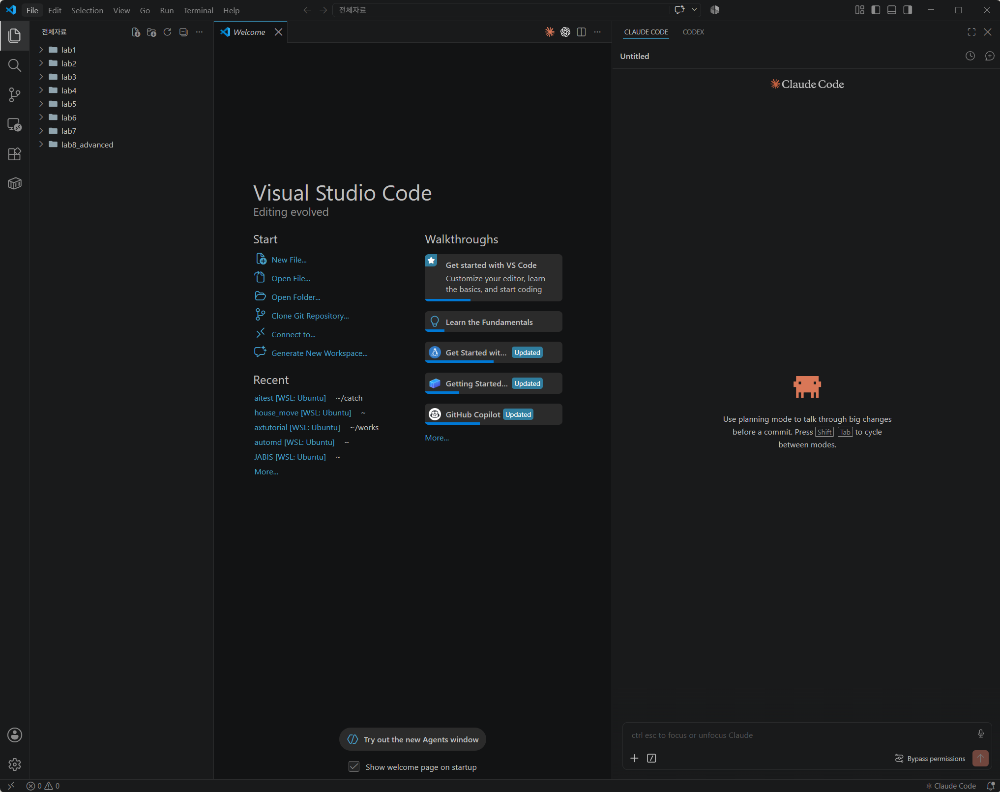
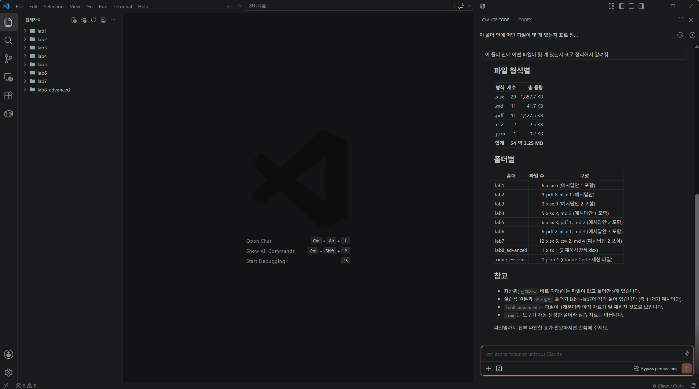

// 실습 준비
5 · 실습 데이터 준비¶
이 페이지에서 하는 일
- 실습 데이터 전체 zip을 내려받습니다
- 경로 문제가 안 생기는 올바른 위치에 압축을 풉니다
도구 설치가 끝났으니, 오늘 만질 실습 재료를 내려받아 압축까지 풀어둡니다.
1. 전체 zip 내려받기¶
홈 화면의 내려받기 표에서 전체 자료 zip을 받습니다.
2. 올바른 위치에 압축 풀기¶
내려받은 zip에서 마우스 오른쪽 버튼 → 압축 풀기를 하면 전체자료 폴더가 생깁니다. 바탕화면이든 어디든 편한 곳에 풀면 됩니다.
이렇게 나오면 정상입니다
전체자료폴더 안에lab1~lab7일곱 폴더와lab8_advanced폴더가 보입니다lab1폴더를 열면웹주문.xlsx,전화주문.xlsx,제휴주문.xlsx,주문종합.xlsx,작업방법참고.xlsx가 보입니다- 폴더 번호가 곧 실습 번호입니다 — 실습 1은
lab1, 실습 5는lab5, 심화 실습은lab8_advanced

이렇게 보인다면
- 폴더 안에 같은 이름 폴더가 또 있다(
전체자료/전체자료/lab1…) → 안쪽전체자료가 진짜입니다. 안쪽 것을 기준으로 쓰세요 - 한글 이름이 깨진다 → 다른 압축 프로그램(반디집·알집 등)으로 다시 푸세요
3. 폴더 열고 말 걸어보기¶
데이터가 준비됐으니, 바로 열어서 말이 통하는지까지 확인합니다. 화면 세 개가 순서대로 보이면 세팅 끝입니다.
① 폴더 열기 — VS Code를 실행하고, 위 메뉴에서 파일 > 폴더 열기를 눌러 압축을 푼 전체자료 폴더를 고릅니다.

파일 열기가 아니라 폴더 열기입니다
가장 흔한 실수입니다. 파일 하나만 열면 AI가 옆에 있는 다른 파일들을 보지 못합니다. 왼쪽 목록에 여덟 폴더가 보여야 정상입니다.
② Claude Code 패널 열기 — Ctrl+L (맥은 Cmd+L)을 누릅니다. 오른쪽 위 Claude 아이콘(✻)을 눌러도 같습니다.

③ 첫 문장 보내기 — 패널 입력줄에 아래 한 줄을 그대로 복사해 넣으세요.
이 폴더 안에 어떤 파일이 몇 개 있는지 표로 정리해서 알려줘.
이렇게 나오면 정상입니다
폴더별 파일 개수가 적힌 표가 화면에 나옵니다. 예를 들어 lab1 안에 엑셀 파일 5개가 있다고 답합니다
이렇게 나왔다면
- "폴더가 비어 있다"고 한다 → 열려 있는 폴더가
전체자료가 아닙니다. ①로 돌아가세요 - 패널이 안 뜬다 → ④ Claude Code 설치에서 확장 설치를 확인하세요
- 한참 답이 없다 → 1분 정도는 정상입니다. 3분이 지나도 없으면 Esc로 멈추고 다시 시도하세요
다 됐는지 스스로 확인하기¶
- 압축을 푼
전체자료폴더 안에lab1~lab7과lab8_advanced폴더가 있다 - VS Code로
전체자료폴더를 열었고, 왼쪽에 여덟 폴더가 보인다 - Claude Code 패널에서 파일 개수 표를 받았다
여기까지 됐으면 세팅이 모두 끝났습니다. 홈의 예시답안 zip(실습별 완성 결과)은 언제든 받아서 내 결과와 비교해 볼 수 있고, 에러 대처는 에러가 났어요에 있습니다.